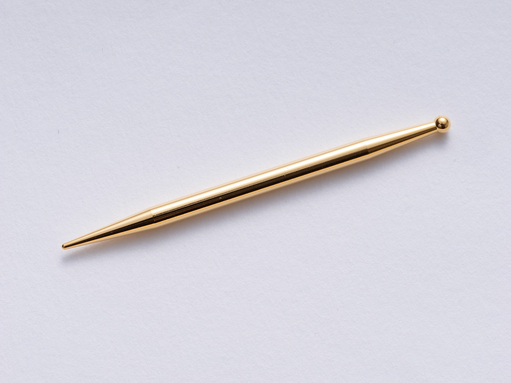

東洋の委員長
鍼灸国家試験対策サイト「東洋の委員長」を運営しています。ICTを活用した鍼灸教育の普及に取り組んでいます。
サービスの特徴
- 暗記カード - 経絡経穴・東洋医学概論の暗記カードで効率的に学習
- 過去問演習 - 科目別・年度別の過去問で実践力を強化
- 進捗状況の可視化 - 学習の進み具合を確認できる
- スマホで反復学習 - いつでもどこでも学習可能
東洋の委員長を選ぶ理由
- 信頼の実績 - 多くの鍼灸学生が利用
- 効率的な問題演習 - 過去の統計データに基づく出題
- あはき師が自社開発 - 現場を知る鍼灸師が作成
国家試験対策を始めましょう
東洋の委員長 公式サイト →